Day 6
Wales v Iran
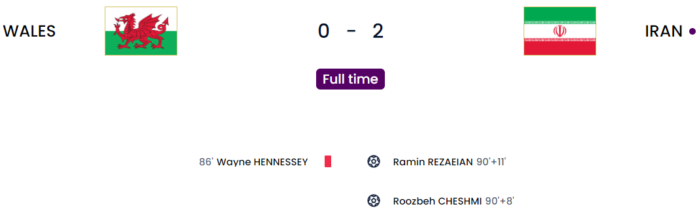
We have seen the first red card of this tournament and what surprised me is that they had to go to VAR to even give it. It was a clear high foot by Hennessey on Taremi which was a red from miles off. The irony that a new directive from FIFA managed to give Iran the win was kind of funny after my criticizing loads of added time. Simply put, a directive was put in place to prevent time-wasting and that was to add more than normal minutes at the end of each game. It is harder on the players because these guys have played at least 3 games each week for their clubs and now they are being forced to play 95 and 100 minutes each game. It is just a joke but I do not want to take it away from Iran because they deserved the win. With the way Iran played, I was more shocked as to how they weren’t able to win easily. They were dominant and Wales were off their game so much. The reliance of Wales on Bale was too obvious. He was off his game by a long way and Wales was also off because of it. As much as he is a good player for Wales, other players do have to step up. Neco Williams, Harry Wilson and others. I get relying on one man alone but Wales has youngsters in promising positions. I hope they don’t waste that. Coming back to both goals by Iran, they were really good goals scored on the counter and also Danny Ward was in goal(Not exactly a keeper in form). The red card sub was Ward for Ramsey. The first one was a good shot outside the box after a fluffed clearance from Joe Allen. The second was just a trademark counterattack. Fewer numbers, and tiring legs and they managed to easily score. Besides this, I think the best chance they had was a shot that hit the post twice before being saved by Hennessey finally.
Wales
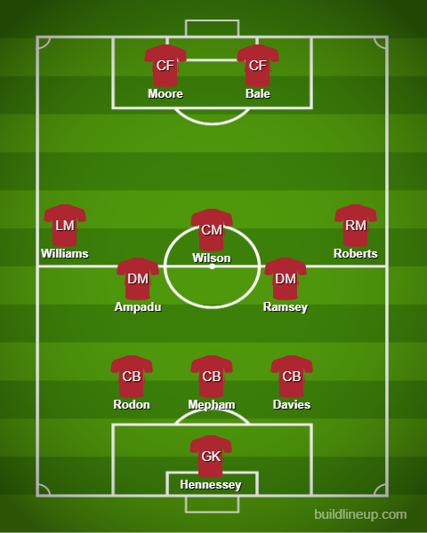
Iran
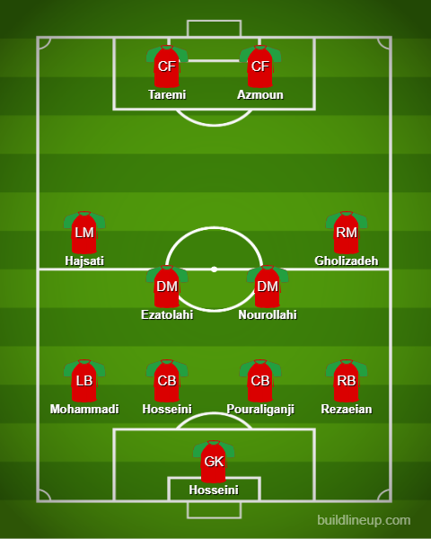
Qatar v Senegal
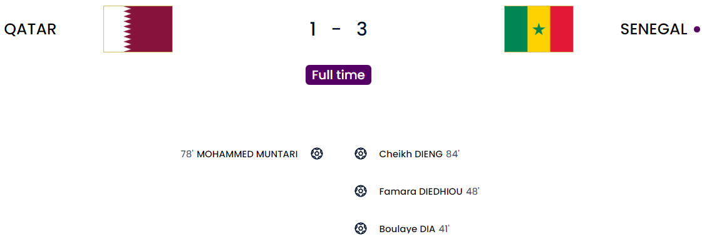
We have got the first elimination of the tournament and surprise surprise it is the hosts. For this match however they put up a little fight with an equalizer so I will give them that. Apart from that, I ain’t shedding any tears for them leaving. Senegal was confusing somehow. Not in the exact same selves, they were against the Netherlands but Qatar had good spells of defense too. The first goal came from a mistake when the defender slipped when taking the clearance and fell to Dia who managed to hit it home. Next was a good corner goal when Diedhiou managed to head it in from an Ismail Jakobs corner(I told you he will be one to watch. He took a good corner). Qatar however managed to put up a little fight when Muntari managed to get a great header past Mendy. But Senegal managed to put the game beyond them when Dieng scored a great first-time shot after a good move.
Qatar
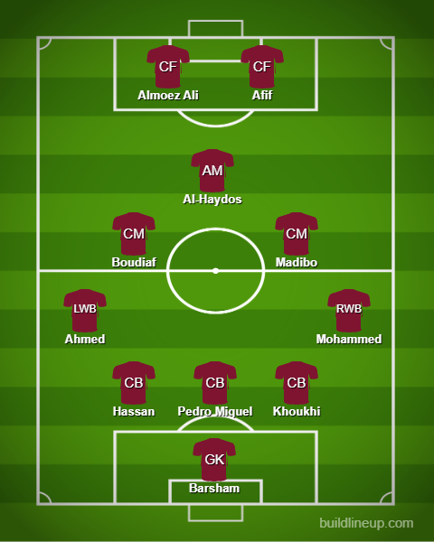
Senegal
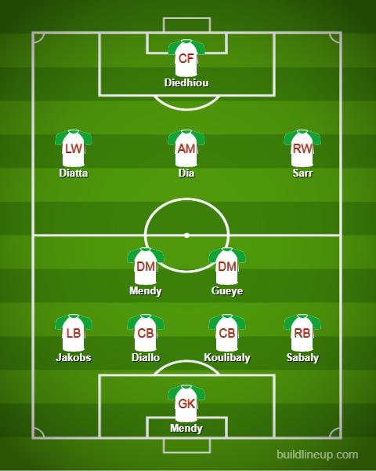
Netherlands v Ecuador
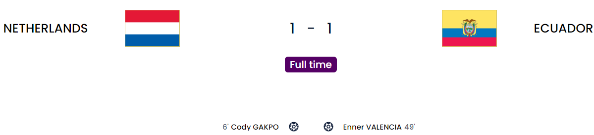
This was uncharacteristic of the Netherlands. They did score early via Gakpo which was a really well-taken goal. His stock is rising and rising. Loads of power and hard for the keeper to quickly get to it. I guess the saying “You can be vulnerable when you score early” is true in this case. After that goal, they really didn’t create many chances and Ecuador was the one who was attacking for the most part of the game. That was quite literally the weird part of this game. Estupinan was dangerous down the left. Ecuador managed to get back but it was disallowed in a load of controversy. Plata shot it into the box and Esupinan managed to deflect it in but the goal was not given because one defender was in the middle and he was adjudged to have been interfering with the play which felt really harsh to them. They managed to score finally when a shot was saved by Noppert(Who had a rather decent game) and it came to Valencia who managed to score. He is the current leader of the Golden Boot. Sadly he came off after his leg(calf or knee) flared up again after the first match. There were loads of chances here and there for Ecuador but they could not find the finishing touch. One major chance came from Plata who struck it well but it hit the post.
Netherlands
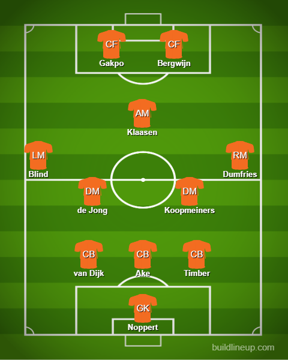
Ecuador
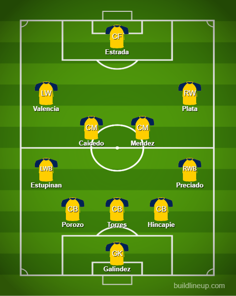
England v United States
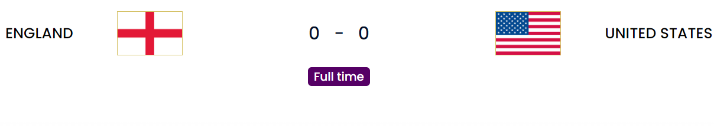
I would not call it a dull goalless draw but it was more disappointing from England personally and I wouldn’t mind seeing USA come away with the 3 points if they could actually finish their chances properly. With the way, England played in this match, any good team who creates as many or more chances as the USA did and they are getting through them. Maguire and Stones were good enough you could say but going forwards England had absolutely nothing in terms of creativity. Southgate does not know how to use Foden(An absolute baller for Man City) and Trent(Really good going forward) so he keeps them on the bench which was quite ridiculous. Mount, Kane, Trippier were having bad games and Southgate didn’t bother subbing them off. Kane was obviously sluggish toward the end coupled with his lack of pace. USA was great in creating chances from the likes of Pulisic, McKennie, Weah and Dest. Pulisic deserved his MOTM award.
England
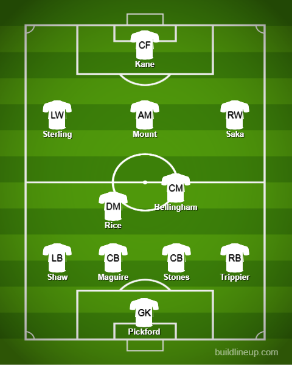
United States
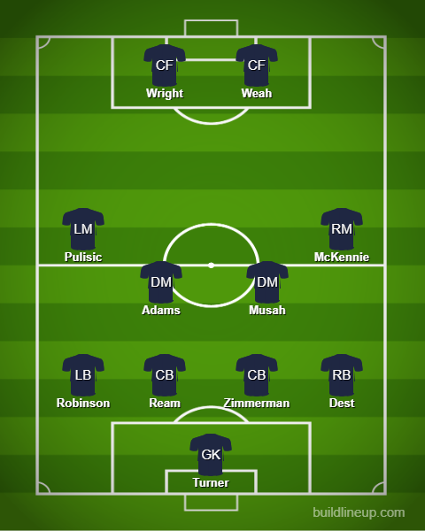